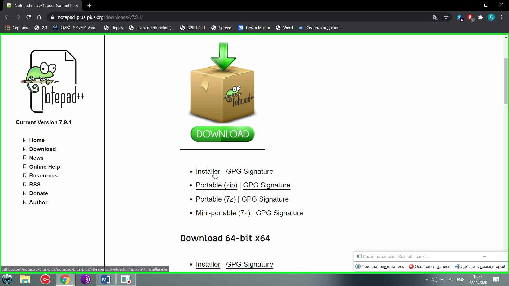

Нажмите
на нём правой кнопкой мыши
Нажмите
на нём правой кнопкой мышиИнструкция по установке и использованию Notepad++
Скачайте файл, ссылка: https://notepad-plus-plus.org/downloads/v7.9.1/
Сохраните
файл
Запустите файл
Нажмите Ок
Далее
Примите условие пользовательского соглашения
Выберите путь или оставьте его по умолчанию, нажмите далее
В выборе опций проверьте локализацию
Раскройте список
Напротив русского языка должна стоять галочка
Нажмите далее
Теперь установить
Готово
Если не снимать галочку про запуск, вы увидите запущенный Notepad++
Нажмите правой кнопкой мыши в папке
Создайте текстовый документ
Переименуйте созданный файл
Нажмите
на нём правой кнопкой мыши
В контекстном меню выберите Edit with Notepad++